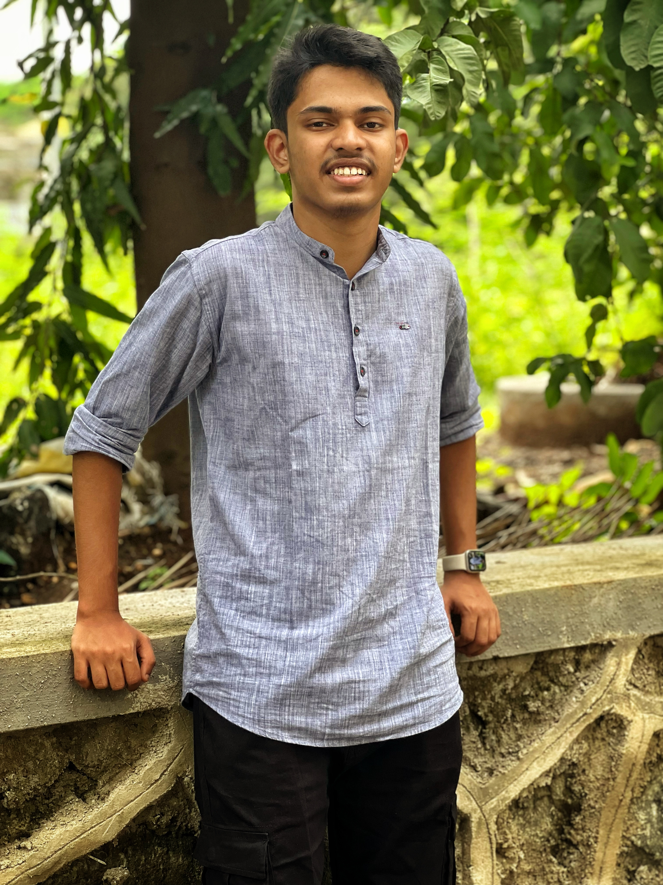
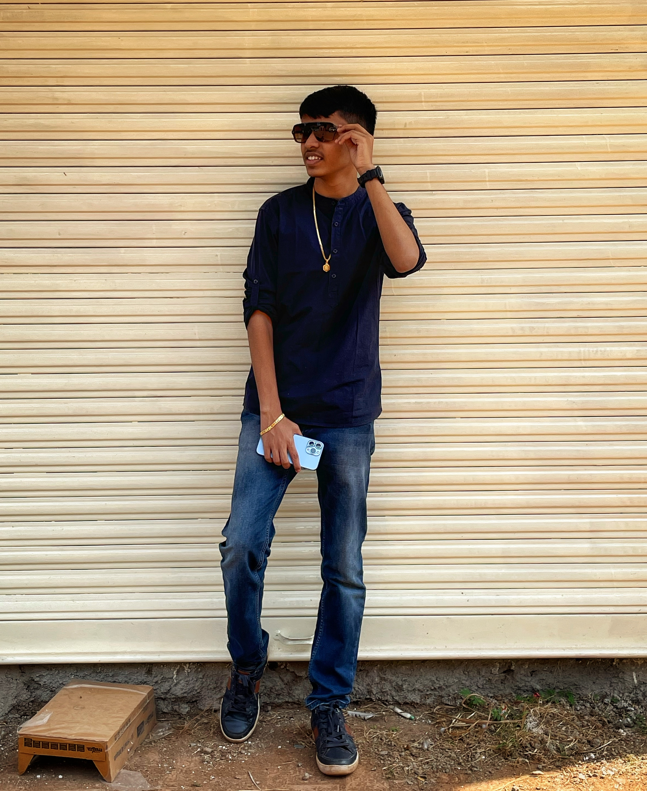

My Value Proposition

I have always been passionate about technology and its potential to solve real-world problems. When I was younger, I loved building websites and games in my spare time. As I got older, I realized that I wanted to pursue a career in web development.
I am currently studying for a Bachelor of Computer Application degree at Amity University Panvel. In addition to my academic studies, I am also involved in a number of extracurricular activities, including the university's web development club.
I am always looking for new ways to learn and grow. I am excited to continue my journey and to use my skills to make a positive impact on the world.
I am passionate about using technology to solve real-world problems and create engaging and interactive experiences. I believe that technology has the potential to make the world a better place, and I am excited to be a part of that.
I am also passionate about learning and growing. I am always looking for new ways to improve my skills and knowledge. I believe that the best way to learn is by doing, and I am always eager to take on new challenges.
I have a strong foundation in web development, UI/UX design, content copywriting, and game development. I am also proficient in HTML, CSS, JavaScript, and React. I am able to work on both front-end and back-end web development projects.
In addition to my technical skills, I am also a skilled communicator and writer. I have a proven ability to write clear, concise, and engaging content for websites and other marketing materials. I am also able to effectively communicate complex technical concepts to non-technical audiences.
My goal is to become a successful web developer. I want to use my skills to create websites that are both visually appealing and user-friendly. I also want to use my skills to solve real-world problems and make a positive impact on the world.
I am also interested in learning more about the web development industry and exploring new opportunities to grow and develop my skills. I am eager to collaborate with talented and passionate individuals on creative projects.


I can offer you a wide range of skills and experience. I am able to build websites from scratch, design user interfaces, and write engaging content. I am also able to work on both front-end and back-end web development projects.
I am a highly motivated and results-oriented individual. I am able to work independently and as part of a team to achieve common goals. I am also able to meet deadlines and work under pressure.
I am confident that I have the skills and experience necessary to be a valuable asset to your team. I am eager to learn and grow, and I am excited to contribute to your success.
I am a passionate and skilled web developer with a strong foundation in UI/UX design, content copywriting, and game development. I am also a highly motivated and results-oriented individual.
I am confident that I have the skills and experience necessary to be a valuable asset to your team. I am eager to learn and grow, and I am excited to contribute to your success.